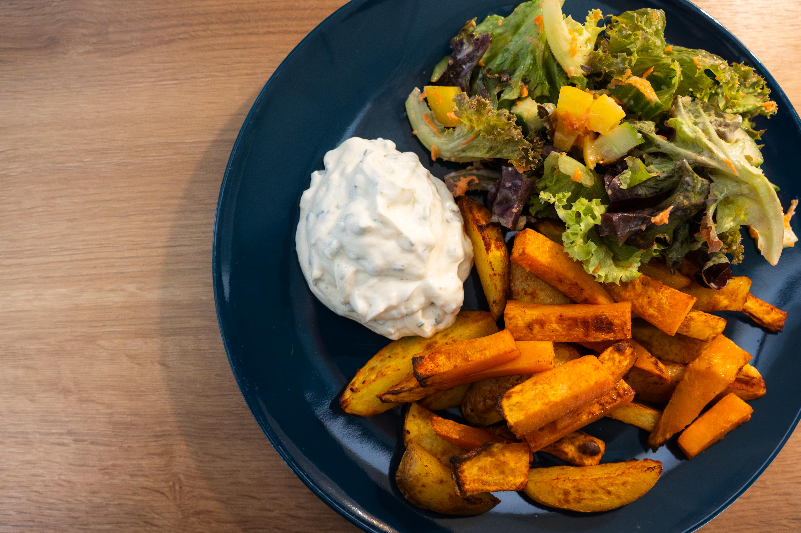

Das Kochbuch für unsere Rezepte
Kartoffeln aus dem Backofen

Zusammen mit Quark und Salat. Und manchmal ein klitzekleines bisschen Ketchup dazu.
Zubereitung
1. Zuerst den Quark machen, da der mind. eine halbe Stunde (besser länger) ziehen sollte. Am wichtigesten ist, dass man die Zwiebeln wirklich seehr klein schneidet.
Dann einfach alles zusammenmischen.
250 g Magerquark
2-3 EL Joghurt
Viertelstels Zwiebel
Bisschen Brühe
Salz&Pfeffer
Schnittlauch (gefroren oder frisch)
Hauch Muskatnuss
2. Kartoffeln (oder auch Süßkartoffeln) schnibbeln. Wenns geht, gleichmäßig.
Dann in eine Schüssel tun und würzen, ölen und dann (auch wieder gleichmäßig) auf dem Backblech verteilen.
Die müssen dann in den Ofen, für mind. 25 Minuten bei 220°C. Wenn Süßkartoffeln dabei sind, die ein klein wenig später
rein tun, da sie sonst verkohlen.
Kartoffeln
Süßkartoffeln
Paprika Edelsüß
3. Dazu einen Salat machen. Am besten passt Uli's Salatsoße!